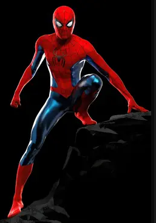

About Me
At first, I was mostly passionate about robotics when growing up. Once I started college, I took my first programming class and that was the moment I knew what I liked to do the most! Throughout my academic journey, I have experienced difficulties and joys... but at the end of the day, your passion never fails! That is why, I chose to keep trying and develop new skills every day.

It is so exciting to see that the next Spiderman Movie is coming so soon!